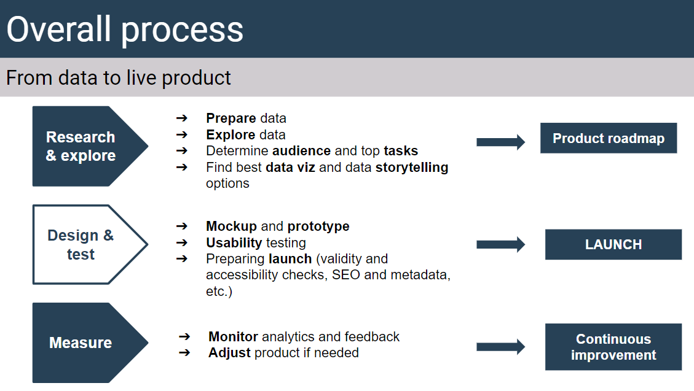

The design process should always have the
end user
in mind: who is the product for, what will they be doing with it, how can we help them get what they need for the data?
3 main phases:
Research and explore
: this is where you prepare and explore the data, determine audience and tasks, and try to figure out what are your best data viz and data storytelling options to enable people to complete the determined data tasks. Should result in an agreement through a “product roadmap”
Design and test:
this is where you produce a solid mockup (based on findings from the previous phase), and start building the product. Ideally, if it’s enough of a high priority for the department, there should be usability testing to confirm the product actually helps people complete their tasks. Before launch, some checks need to be performed (code validity, accessibility, metadata, etc.).
Measure
: a robust performance measurement framework should be in place, analytics and feedback should be monitored, and improvements should be made to the product (continuous improvement)
In essence: make sure we
build the right thing
(something that actually addresses people’s needs),
build it the right way
(use good design and test our products), and
measure
to make sure it actually works in real life.

Product roadmap
Get all parties to discuss and align on on audiences, objectives and tasks, and document it - should help make better products that align with user needs